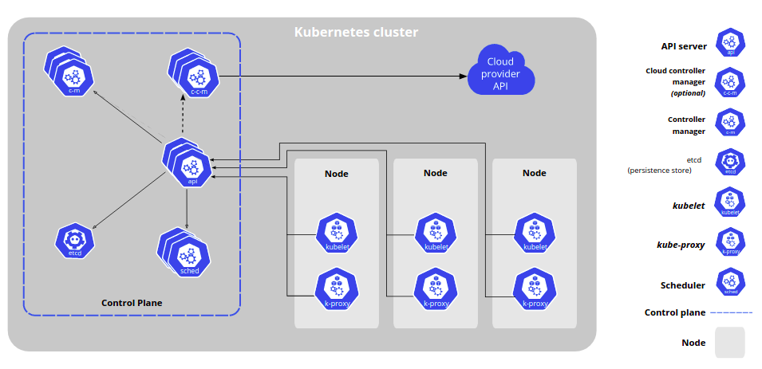
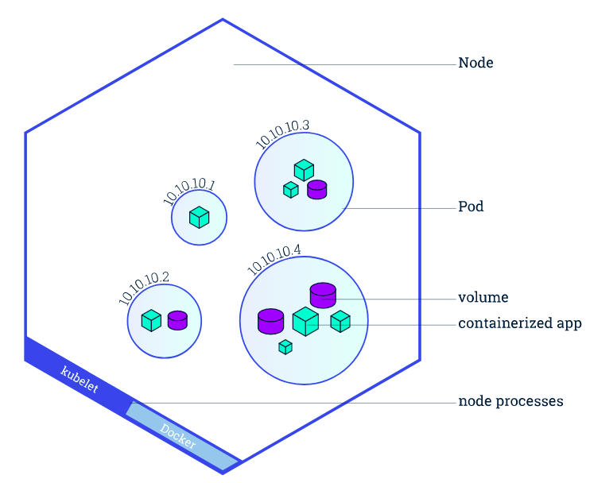
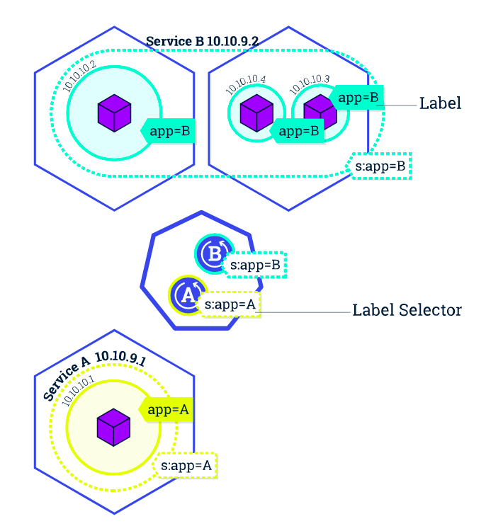

Introduction¶
Kubernetes是用于自动部署，管理和扩展容器化应用程序的开源系统。
Kubernetes 提供：
服务发现和负载均衡
存储编排
自动部署和回滚
自动完成装箱计算
自我修复
密钥于管理配置
Kubernetes 组件¶
控制平面组件
对集群作出全局决策，检测及相应集群事件
kube-apiserver
该组件公开了Kubernetes API。API服务器时Kubernetes控制面的前端
etcd
集群数据的后台数据库
kube-schedule
监视新创建的未指定运行节点的Pod，并选择节点让Pod在上面运行
kube-controller-mannager
在主节点上运行控制器的组件
cloud-controller-mannager
嵌入特定云的控制逻辑的控制平面组件
Node组件
节点组件在每个节点上运行，维护运行的Pod并提供Kubernetes运行环境
kubelet
一个在集群中每个节点上运行的代理，保证容器都运行在Pod中
kube-proxy
集群中每个节点上运行的网络代理，实现Kubernetes service 概念的一部分
容器运行时
负责运行容器的软件
插件
插件适用Kubernetes资源(DaemonSet, Deployment)实现集群功能
DNS
Web界面
容器资源监控
Kubernetes 基础¶
1.创建集群
Master 负责管理整个集群，Node是一个虚拟机或物理机
minikube start
kubectl是Kubernetes的命令行工具
kubectl cluster-info 查看集群信息kubectl get nodes 显示所有节点2.部署应用
Delpoyment 指挥Kubernetes 如何创建和更新应用程序的实例
kubectl create deployment kubernetes-bootcamp --image=gcr.io/google-samples/kubernetes-bootcamp:v1
kubectl get deployments 显示 deployments
3.了解应用
工作节点和Pod
在创建Delpoyment时，Kubernetes添加了一个Pod来托管引用程序。Pod是抽象出来的表示 一组一个或多个应用程序容器及以这些容器的一些共享资源。
Pod是Kubernetes平台上的原子单元，每个Pod都与调度他的节点绑定，一个节点可以有多个Pod
kubectl get podskubectl describe pods4.公开暴露应用
Kubernetes 中的Service是一种抽象概念，定义了Pod的逻辑辑和访问Pod的协议。 Service 下的一组Pod通常由LabelSelector来标记，Service 将Pod暴露在集群外部以供访问。
kubectl get sevices 获取服务列表
kubectl expose deployment/kubernetes-bootcamp --type="NodePort" --port 8080kubectl describe services/kubernetes-bootcampkubectl get services -l run=kubernetes-bootcampkubectl delete services -l run=kubernetes-bootcamp